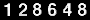

Signature programs
Signature programs are short programs that people have been using
as part of their signature. They are small (2 to 4 lines) programs,
that are often rather cryptic because they have to save space as much
as possible. Some of the following signature programs were collected by
Charlie Gibbs. Of course, the authors of the programs hold their copyrights.
Any comments or additions are welcome. This page was chosen as "Geek Site
of the Day" of June 17, 1996.
This counter has been queried
 time, since 19951207
My home page |
Final words . . .